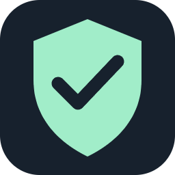

Личный клиент для LG
Загрузка…
Можно закрыть приложение — VPN продолжит работать.
По отклику · Россия и мосты в конце
Стрелки — выбор · OK — сохранить · Назад — закрыть
VPN подключится после появления сети. Ручное отключение действует до перезапуска ТВ.
Проверять и загружать новые версии. Устанавливать при полной загрузке телевизора.